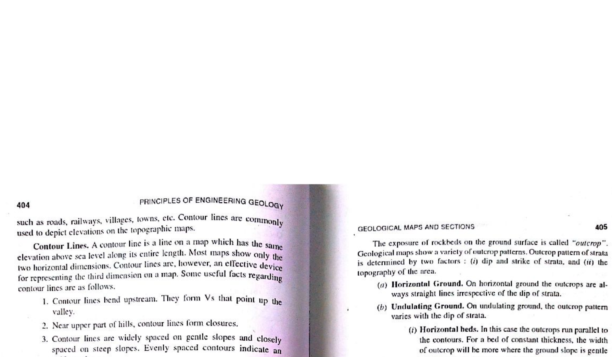
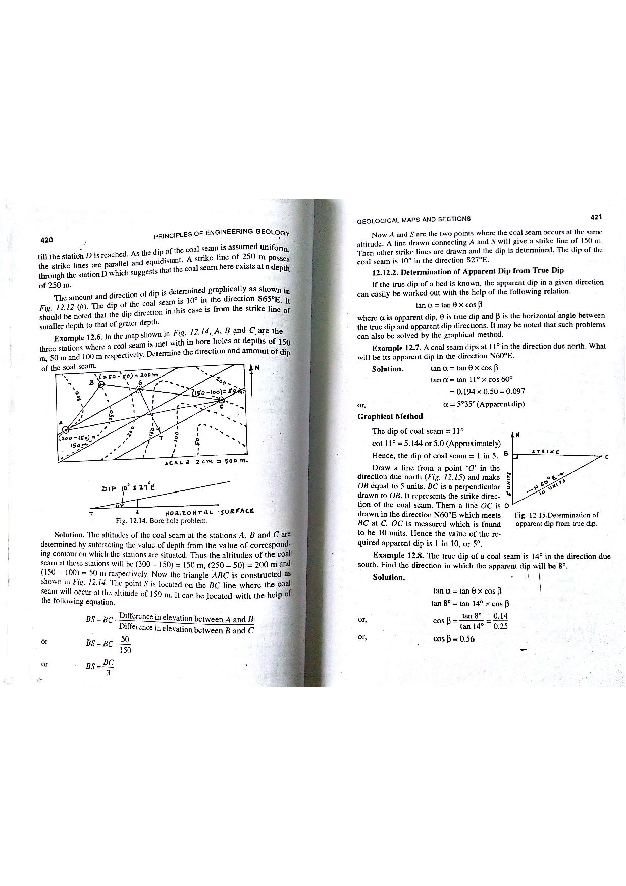
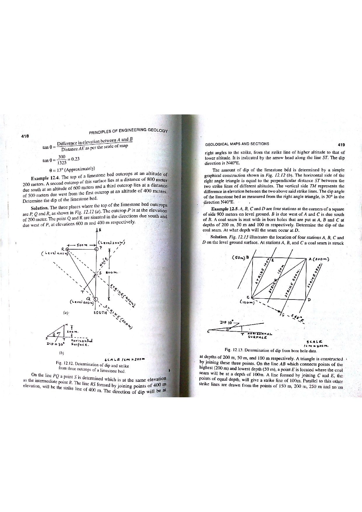
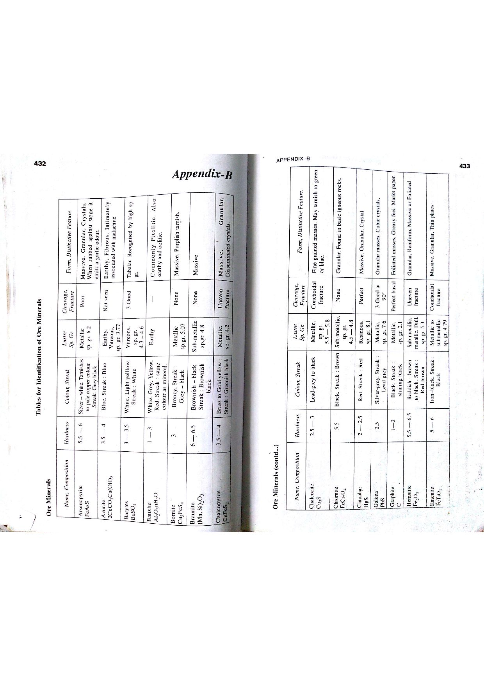

12.1 Elements of Geological Maps and Topography
A Geological Map represents the distribution, structural attitudes, geological contacts, and ages of rock units exposed on the Earth's surface, projected onto a topographic base map. The fundamental components of a geological map include:
- Topographic Contours: Imaginary lines joining points of equal ground elevation above mean sea level ($MSL$). The vertical distance between consecutive contour lines is the Contour Interval ($CI$), and the horizontal distance is the Horizontal Equivalent ($HE$): $$\text{Ground Slope } (\tan \theta) = \frac{\text{Contour Interval } (CI)}{\text{Horizontal Equivalent } (HE)}$$
- Map Scale: The ratio between distance on the map and actual ground distance: $$\text{Representative Fraction } (RF) = \frac{\text{Map Distance}}{\text{Ground Distance}}$$


12.2 Outcrop Patterns and the Rule of V's
An Outcrop is the exposed portion of a rock unit at the surface. When an inclined geological bed intersects a river valley, its outcrop trace on a map forms a characteristic V-shape. The relationship between bed dip and valley slope is governed by the Rule of V's:
| Structural Attitude of Bed | Valley Crossing Outcrop Pattern | Diagnostic Rule of V's Behavior |
|---|---|---|
| Horizontal Strata ($\theta = 0^\circ$) | Follows topographic contours exactly | Forms a V that points Upstream, perfectly parallel to the contour lines forming the valley. |
| Vertical Strata ($\theta = 90^\circ$) | Straight line across topography | Cuts completely straight across valleys and ridges with Zero V, independent of contour lines. |
| Beds Dipping Upstream | V points Upstream | Forms a V pointing Upstream. The V is narrower and sharper than the contour lines. |
| Beds Dipping Downstream ($\text{Dip} > \text{Valley Slope}$) | V points Downstream | Forms a V that points Downstream in the direction of dip. |
| Beds Dipping Downstream ($\text{Dip} = \text{Valley Slope}$) | Parallel outcrops along valley walls | The contact runs parallel to the stream bank and never crosses the stream. |
| Beds Dipping Downstream ($\text{Dip} < \text{Valley Slope}$) | V points Upstream | Forms a broad V pointing Upstream (reverses apparent direction). |
12.3 Outcrop Patterns of Folds, Faults, and Unconformities
Folded Strata on Maps
- Symmetrical Folds: Display mirror-image repetition of rock units on either side of the axial trace.
- Anticlines: Oldest beds occupy the core / center of the structure, flanked symmetrically by progressively younger beds dipping outward.
- Synclines: Youngest beds occupy the core, flanked by progressively older beds dipping inward.
- Plunging Folds: Contacts form parabolic or convergent V-shaped outcrop closures:
- In a Plunging Anticline, the nose of the V points in the direction of plunge.
- In a Plunging Syncline, the nose of the V points opposite to the direction of plunge (opens in plunge direction).
Faulted Strata on Maps
A fault appears as a sharp linear or curvilinear discontinuity along which lithological units are truncated, repeated, or omitted. If a dipping bed is intersected by a strike-slip or normal fault, the outcrop displays a horizontal lateral shift (offset) across the fault trace.
Unconformities on Maps
An angular unconformity is recognized by younger, flatter strata overlapping and truncating the tilted, folded, or faulted contacts of the underlying basement rocks (discordance in strike and dip).
12.4 Quantitative Geological Calculations & Three-Point Problem
1. True Thickness vs. Outcrop Width
On horizontal ground, the True Stratigraphic Thickness ($t$) of an inclined planar bed dipping at angle $\theta$ with outcrop width $W$ is:
$$t = W \cdot \sin \theta$$If measured in a vertical borehole of depth $D$:
$$t = D \cdot \cos \theta$$2. The Three-Point Problem
When a planar bedding plane or coal seam does not crop out continuously, its true strike and dip can be calculated mathematically from three non-collinear boreholes ($A$, $B$, $C$) intersecting the bed at known surface elevations and depths:
- Calculate the absolute reduced level ($RL$) of the bed at all three points: $RL = \text{Surface Elevation} - \text{Depth to Bed}$.
- Rank the points: Highest ($H$), Intermediate ($I$), and Lowest ($L$).
- Draw a line connecting the highest ($H$) and lowest ($L$) points on the map.
- Find a point $P$ along the line $HL$ having the exact same reduced level as intermediate point $I$ by proportional linear interpolation: $$\frac{HP}{HL} = \frac{RL_H - RL_I}{RL_H - RL_L}$$
- The straight line connecting $I$ and $P$ is a line of equal elevation on the bed plane—hence, it represents the True Strike Line of the bed!
- The direction perpendicular to $IP$ pointing towards the lower elevation is the True Dip Direction, and the dip angle $\theta$ is: $$\tan \theta = \frac{\Delta h}{d_{\perp}}$$ where $\Delta h$ is the contour interval/elevation difference, and $d_{\perp}$ is the perpendicular distance between strike lines.
12.5 Geographic Information Systems (GIS) in Geology
A Geographic Information System (GIS) is a computer-based framework that captures, stores, manipulates, analyzes, manages, and presents all types of geographically referenced spatial data.


- Landslide Susceptibility Zonation (LSZ): Overlaying thematic raster layers of slope gradient, lithology, structural lineaments, land use, and rainfall using Multi-Criteria Decision Analysis (AHP) to generate regional landslide risk maps.
- Route Optimization for Highways & Tunnels: Using 3D Digital Elevation Models (DEM) and geological strike/dip vectors to select alignments that minimize earthwork cutting and cross adverse fault corridors at right angles.
- Reservoir Inundation Modeling: Delineating the precise full reservoir level ($FRL$) backwater perimeter by intersecting dam crest elevation surfaces with LiDAR terrain models.